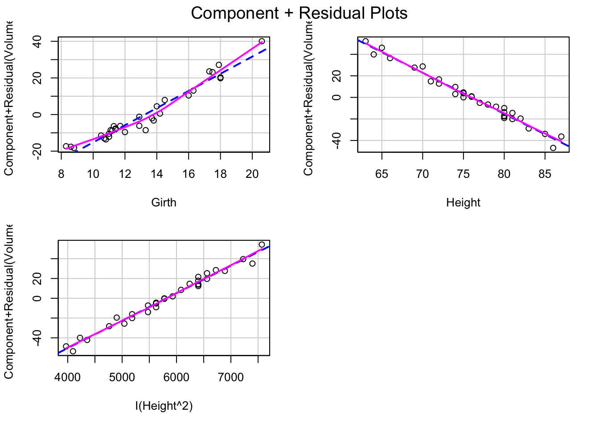
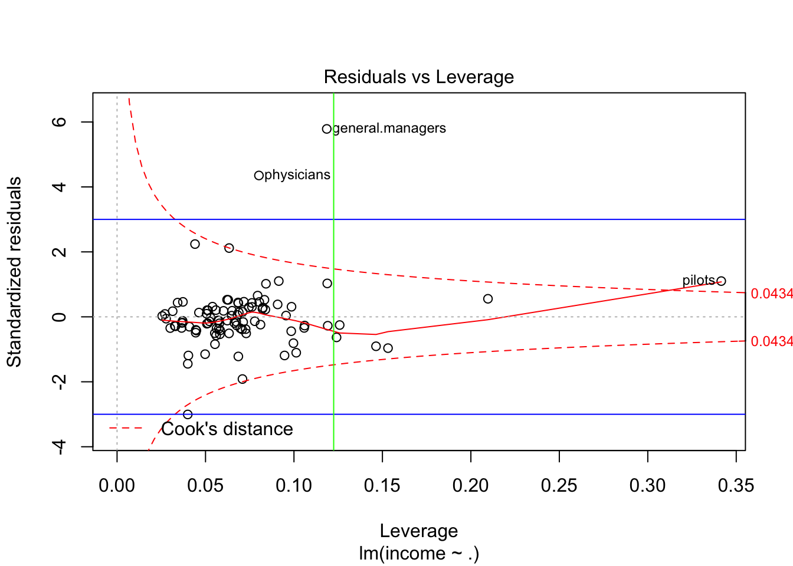

Last updated: 2020-05-05
Checks: 7 0
Knit directory: STA463_Spring_2020/
This reproducible R Markdown analysis was created with workflowr (version 1.4.0). The Checks tab describes the reproducibility checks that were applied when the results were created. The Past versions tab lists the development history.
Great! Since the R Markdown file has been committed to the Git repository, you know the exact version of the code that produced these results.
Great job! The global environment was empty. Objects defined in the global environment can affect the analysis in your R Markdown file in unknown ways. For reproduciblity it’s best to always run the code in an empty environment.
The command set.seed(20200213) was run prior to running the code in the R Markdown file. Setting a seed ensures that any results that rely on randomness, e.g. subsampling or permutations, are reproducible.
Great job! Recording the operating system, R version, and package versions is critical for reproducibility.
Nice! There were no cached chunks for this analysis, so you can be confident that you successfully produced the results during this run.
Great job! Using relative paths to the files within your workflowr project makes it easier to run your code on other machines.
Great! You are using Git for version control. Tracking code development and connecting the code version to the results is critical for reproducibility. The version displayed above was the version of the Git repository at the time these results were generated.
Note that you need to be careful to ensure that all relevant files for the analysis have been committed to Git prior to generating the results (you can use wflow_publish or wflow_git_commit). workflowr only checks the R Markdown file, but you know if there are other scripts or data files that it depends on. Below is the status of the Git repository when the results were generated:
Ignored files:
Ignored: .DS_Store
Ignored: .Rhistory
Ignored: .Rproj.user/
Ignored: lec/
Unstaged changes:
Modified: analysis/corona.Rmd
Modified: analysis/index.Rmd
Note that any generated files, e.g. HTML, png, CSS, etc., are not included in this status report because it is ok for generated content to have uncommitted changes.
These are the previous versions of the R Markdown and HTML files. If you’ve configured a remote Git repository (see ?wflow_git_remote), click on the hyperlinks in the table below to view them.
| File | Version | Author | Date | Message |
|---|---|---|---|---|
| Rmd | 1e17bed | dleelab | 2020-05-06 | new |
Recall the simple linear regression model, we plot Y versus X and see if there’s a linear trend. Or plot the residuals against fitted values, look for curvature.
For multiple regression, we can also plot Y versus each of X separately and see if there’s a linear trend. Or plot residuals versus each of X separately or fitted values, see if there’s unexplained trend in the plots. (We may also plot residuals against other variables/interaction terms to see if we want to include more predictor variables)
tfit1=lm(Volume~Girth+Height,data=trees)
plot(tfit1,which=1)plot(tfit1$residuals~Girth,data=trees)plot(tfit1$residuals~Height,data=trees)int=trees$Girth*trees$Height
plot(tfit1$residuals~int,data=trees)#maybe we don't need to include the interaction term.There’s curve/clear quadratic trend in the residual vs fitted value plot and also the residual vs each predictor variables plot. There’s violation of linearity assumption.
library(car)Loading required package: carDataavPlots(tfit1)Based on the plot, we find the added variable plot for Girth shows a linear trend, and the dots are very close to the regression line. This indicates a linear term of Girth maybe a helpful addition to the regression model already containing the variable Height.
On the other hand, although the added variable plot for Height also shows a linear trend, but since the dots show more variation, the effect of adding linear term Height into the model when Girth is already included maybe not as strong as the previous one.
If the added variable plot shows some curvilinear trend, we may also try different ways to add functions of predictors into the model, when other predictors are already included.
Note: added-variable plots need to be used with caution for identifying the nature of the marginal effect of a predictor variable. The plots may not show the proper form of the marginal effect of a predictor variable if the functional relations for some or all the predictor variables already in the regression model are misspecified. e.g. if \(X_2\) and \(X_3\) are related in a curvilinear fasion to the response, but the regression model uses linear terms only, the added-variable plots for \(X_2\) and \(X_3\) may not show the proper relationship to the response variable. Especially if variables are correlated.
We can use the crPlot function in the package “car”, and see whether there’s any non linear trend. If the solid smoother is close to the straight dashed line, then the linearity condition is met. (dashed line is the least squares line, solid smoother is based on nonparametric regression lines.)
library(car)
crPlots(tfit1)Both of predictors have a quadratic trend with the residuals. So we can add one quadratic term at a time.
tfit2=lm(Volume~Girth+Height+I(Girth^2),data=trees)
crPlots(tfit2)plot(tfit2,which=1)After adding the quadratic term of Girth, the shape of the component+residual plots changed. Better than the previous plots. And the residual vs fitted value plot also shows a linear trend.
tfit3=lm(Volume~Girth+Height+I(Height^2),data=trees)
crPlots(tfit3)
plot(tfit3,which=1)After adding the quadratic term of Height, the shape of the component+residual plots also changes. But the residual vs fitted value plot still shows a quadratic trend. Lineartiy assumption still not met.
An observation is an outlier if the absolute value of the studentized or studentized deleted residuals is greater than 3.
An observation has high leverage if \(h_{ii}>\frac{2p}{n}\)
The points that are both outlying and have high leverage. Use Cook’s distance.
library(car)
mydata=Prestige[!is.na(Prestige$type), ]#remove the observations with missing values for "type"
n=nrow(mydata)
p=ncol(mydata)
criteria_leverage=2*p/n
criteria_cook=qf(0.5,p,n-p)
criteria_cook2=4/(n-p)
fit=lm(income~.,data=mydata)
#Graphically detect influential points using cook's distance
plot(fit,which=4)
abline(h=criteria_cook2,col="blue")plot(fit,which=5,cook.levels = criteria_cook2)
abline(h=c(-3,3),col="blue")
abline(v=criteria_leverage,col="green")
we can use the funciton: identify(x,y) to detect unusual observations based on the plot. Click on the suspicious point, then click finish.
#identify(hatvalues(fit),rstandard(fit))For example, the following are the observations mydata[c(11,17,20,2,24,92),] pilots: seems they have a very large census code, maybe we can also delete this part from the model.
sessionInfo()R version 3.6.1 (2019-07-05)
Platform: x86_64-apple-darwin15.6.0 (64-bit)
Running under: macOS Catalina 10.15.4
Matrix products: default
BLAS: /Library/Frameworks/R.framework/Versions/3.6/Resources/lib/libRblas.0.dylib
LAPACK: /Library/Frameworks/R.framework/Versions/3.6/Resources/lib/libRlapack.dylib
locale:
[1] en_US.UTF-8/en_US.UTF-8/en_US.UTF-8/C/en_US.UTF-8/en_US.UTF-8
attached base packages:
[1] stats graphics grDevices utils datasets methods base
other attached packages:
[1] car_3.0-4 carData_3.0-2
loaded via a namespace (and not attached):
[1] zip_2.0.4 Rcpp_1.0.4.6 cellranger_1.1.0 compiler_3.6.1
[5] pillar_1.4.3 git2r_0.26.1 workflowr_1.4.0 forcats_0.4.0
[9] tools_3.6.1 digest_0.6.25 evaluate_0.14 tibble_3.0.0
[13] lifecycle_0.2.0 pkgconfig_2.0.3 rlang_0.4.5 openxlsx_4.1.3
[17] cli_2.0.2 curl_4.3 yaml_2.2.1 haven_2.1.1
[21] xfun_0.12 rio_0.5.16 stringr_1.4.0 knitr_1.28
[25] fs_1.4.1 vctrs_0.2.4 hms_0.5.1 rprojroot_1.3-2
[29] glue_1.4.0 data.table_1.12.2 fansi_0.4.1 readxl_1.3.1
[33] foreign_0.8-71 rmarkdown_1.15 magrittr_1.5 whisker_0.4
[37] backports_1.1.6 htmltools_0.4.0 ellipsis_0.3.0 abind_1.4-5
[41] assertthat_0.2.1 stringi_1.4.6 crayon_1.3.4